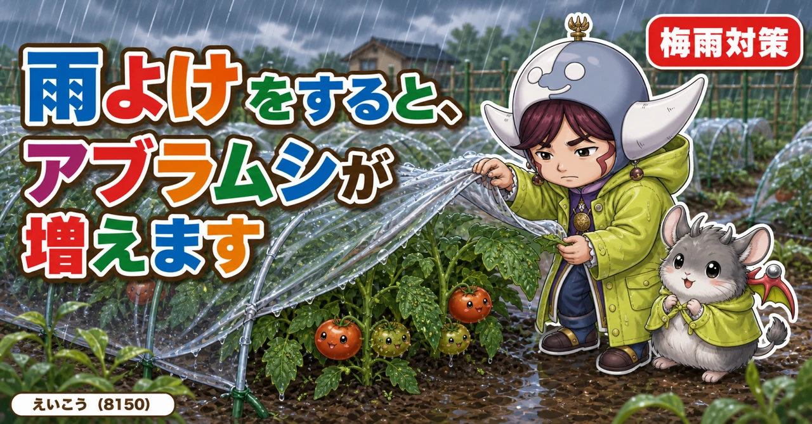
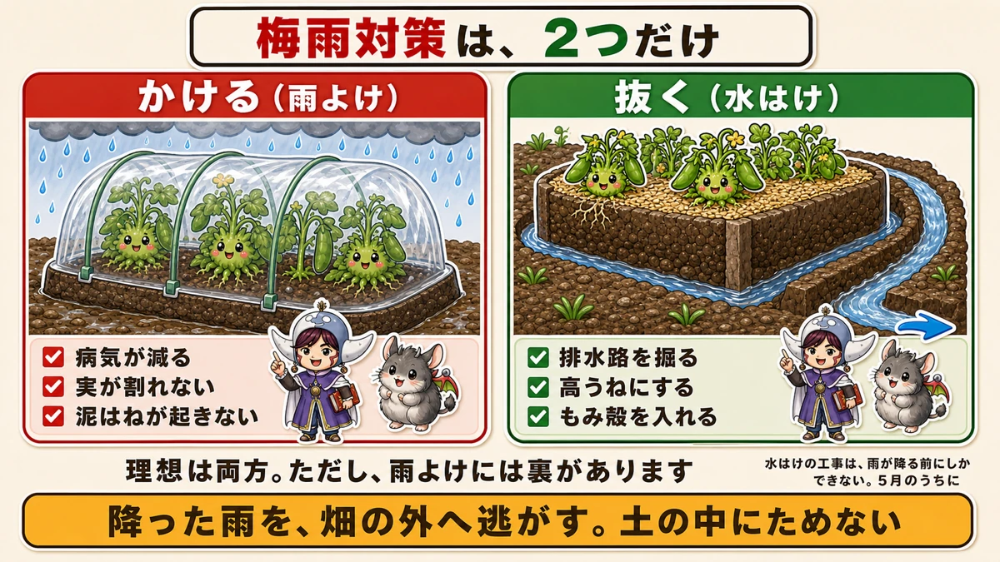
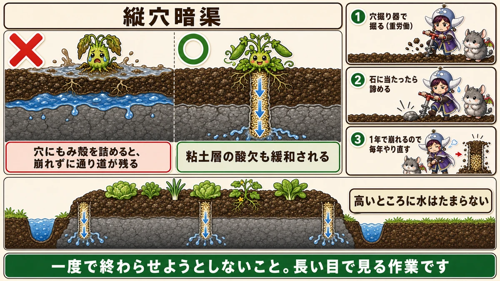
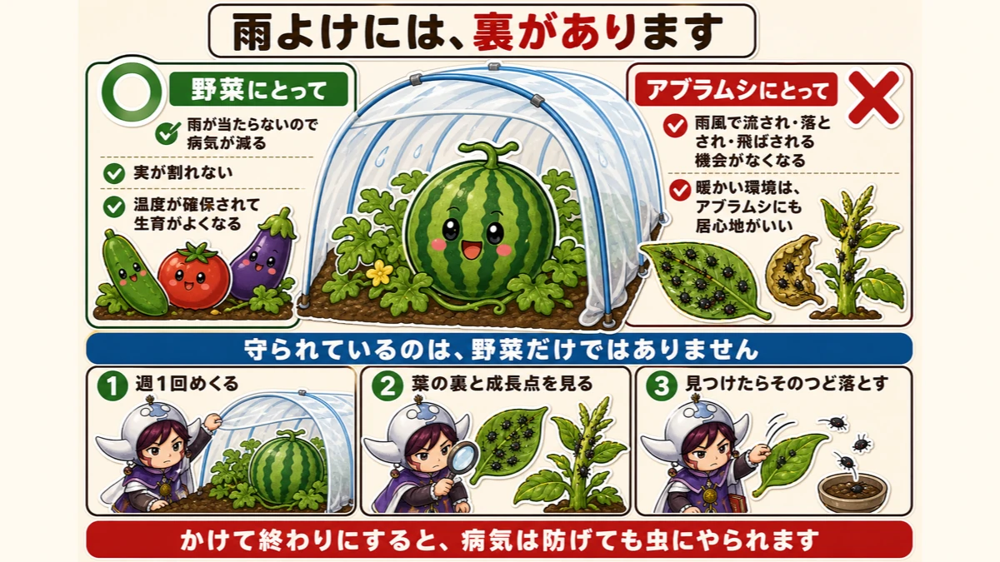
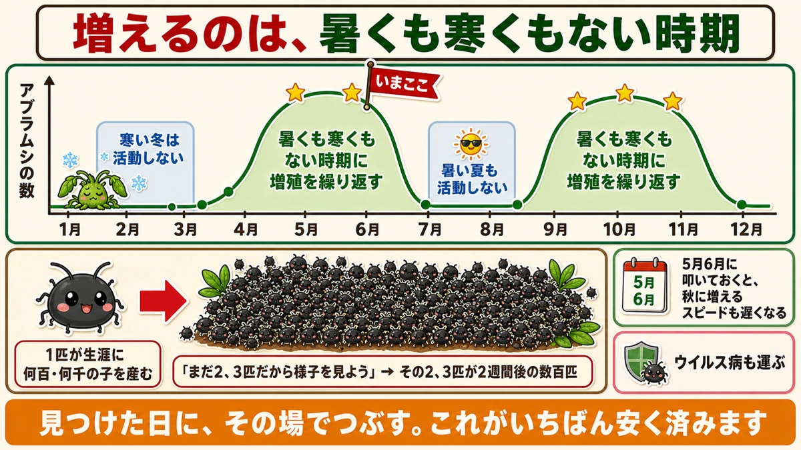

雨よけをすると、アブラムシが増えます☔ それでもかける理由

🗨️「梅雨になると、いつも病気が出る」
🗨️「雨のあと、畑がぬかるんで入れない」
🗨️「雨よけをしたのに、うまくいかなかった」
どうも、8150（えいこう）です🌱 家庭菜園歴8年、理科の教員免許を持っていて、有機・無農薬で野菜を育てています。
もうすぐ梅雨です。
家庭菜園でいちばん病気が出る季節で、そして★準備は雨が降る前にしかできません。
先に、この記事でいちばん言いたいことを言っておきます。
★雨よけをすると、アブラムシが増えます。
雨よけは病気を確かに減らします。でも、それと引き換えに起きることがある。★両方知ったうえでかけてほしいと思います☺️
梅雨対策は、2つしかありません
かけるか、抜くか
やることは、大きく分けて2つです。

★1. かける（雨よけ）
上からビニールを張って、雨そのものを当てない。
★2. 抜く（水はけ）
降った雨を、畑の外へ逃がす。土の中にためない。
★理想は両方です。ただ、雨よけには裏があります。それは後半でお話しします。
①抜く ── 水はけの工事
★雨が降る前にしかできません
まず「抜く」ほうからです。
これは土をいじる作業なので、★雨が降ってからでは手遅れです。ぬかるんだ畑には入れませんし、入ると土を踏み固めてしまいます。
★5月のうちにやってください。
排水路を、先に作る
いちばん基本です。
★うねの外側に、排水路を掘ってください。
深めに、しっかりと。★中途半端だと意味がありません。
そして大事なのは、★先にやることです。夏になって草が生い茂ったころに掘ろうとすると、草との戦いから始めることになります。★手が回るうちに済ませておく。
★高うねにする
うねを高くします。
理由は単純で、★高いところに水はたまらないからです。
野菜の根が水に浸かる時間が短くなります。★根は呼吸しているので、水びたしでは息ができません。前に育苗のところでお話ししたとおりです。
うねの中にも、★何か所か水の逃げ道を切っておくとさらにいいです。
もみ殻を入れる
土そのものを変える方法です。
★畑全体にもみ殻をまきます。
もみ殻は形が崩れにくいので、土の中で隙間を作ってくれます。★その隙間が、水の通り道になります。
ただし注意点が2つ。
- ★入れすぎない。水はけが良くなりすぎることもあります
- ★もみ殻は分解しにくく、窒素飢餓が起きるという説もある。★だから高うねにして、根が直接触れすぎないようにする
★★縦穴暗渠（たてあなあんきょ）
ここからが本題です。
水はけの悪い畑に、いちばん効く方法があります。
★穴掘り器で深い穴を掘って、そこにもみ殻を詰める。

これを★縦穴暗渠と言います。暗渠は「地面の下の水路」という意味です。
なぜ効くのか
水はけの悪い畑は、たいてい★下のほうに粘土の層があります。
上の土がいくらふかふかでも、その粘土層で水が止まります。行き場を失った水が上がってきて、ぬかるみます。
★縦穴暗渠は、その粘土層に穴を開ける作業です。
穴にもみ殻を詰めておくと、崩れずに通り道が残ります。★そこから水が下へ抜けていく。
そしてもうひとつ。★粘土層の酸欠が緩和されます。空気が入るようになるので、土の中の生きものが働けるようになります。
正直に言うと、かなりつらい作業です
穴掘り器を使って、体重をかけて、ぐりぐりと掘ります。
★かなりの重労働です。何か所も掘ります。
★石に当たったら、そこで諦めてください。無理に掘ると道具の先が欠けます。
そして★1年経つと穴は崩れます。毎年やり直すことになります。
それでも、やる価値があります
ただ、効果ははっきり出ます。
★ぬかるみが目に見えて減ります。
そして★毎年繰り返すうちに、畑全体が少しずつ良くなっていきます。かつて田んぼだった土地が、何年もかけて畑になっていった例もあります。
★一度で終わらせようとしないこと。長い目で見る作業です。
②かける ── 雨よけの効果
病気は、確かに減ります
次は「かける」ほうです。
トマトやスイカに、アーチを立ててビニールを張る。★雨よけ栽培と言います。
効果ははっきりしています。
- ★雨が葉に当たらないので、病気がかなり減る
- ★実が雨で割れない、傷まない
トマトは雨に弱い野菜です。★実に水が入ると割れますし、葉が濡れ続けると病気が広がります。雨よけの効果は本物です。
泥はねも防げます
もうひとつ、地味に大きい効果があります。
★雨で地面の泥がはねて、葉に付く。これが病気のいちばん多い入り口です。
雨よけをすると、そもそも雨が地面に落ちません。★泥はねが起きない。
前に、下葉を切って地面と葉のあいだに空間を作る話をしました。★あれと同じ目的を、上から解決する方法です。
★★でも、雨よけには裏があります
アブラムシが、増えます
ここからが今日の本題です。
雨よけをしたスイカのビニールをめくると、★葉の裏に黒いアブラムシがびっしり、ということが起きます。

★葉が縮れて丸まっている。★成長点にもみっしりついている。
雨よけをしていない株より、明らかに多い。なぜでしょうか。
理由①★雨風で落とされなくなる
まず、これです。
★露地で育てていると、アブラムシは雨や風に当たります。
そして★自然に流されたり、落とされたり、飛ばされたりします。人が何もしなくても、数がある程度は減っていく。
★雨よけをすると、それがなくなります。
守られているのは、野菜だけではありません。★アブラムシも一緒に守られています。
理由②★暖かくて、居心地がいい
もうひとつ。
雨よけをすると、中の温度が保たれます。★野菜にとってはメリットです。生育が明らかに良くなります。
でも、★アブラムシにとっても、それは居心地のいい環境です。
★同じ屋根の下で、両方が快適に過ごしている。そういう状態になります。
だから「かけっぱなし」にしない
結論はこうです。
★雨よけをするなら、虫の管理もセットでやってください。
- ★週に1回、ビニールをめくって中を見る
- ★葉の裏と成長点を確認する
- ★見つけたら、そのつど落とす
★かけて終わりにすると、病気は防げても虫にやられます。
★アブラムシの、1年のリズム
暑い夏と寒い冬は、活動しません
ここでアブラムシの生態を知っておくと、対策の見通しが立ちます。
★アブラムシは、成虫や卵で冬を越します。
そして面白いのが、活動の時期です。

- ★寒い冬 … ほとんど活動しない。被害はほぼ出ない
- ★★5月・6月 … 増殖のピーク
- ★暑い夏 … 活動が落ちる。被害はほぼ出ない
- ★★9月・10月・11月 … 2回目のピーク
★暑くも寒くもない、居心地のいい時期に増えます。
★5月6月に叩くと、秋が楽になります
ここが実用的なところです。
★今の時期に数を減らしておくと、秋に増えるスピードも遅くなります。
夏のあいだは活動が落ちますが、いなくなるわけではありません。★春に残った数が、秋の出発点になります。
だから★5月6月の防除は、秋への投資でもあります。
★★1匹が、何千匹になります
最後に、いちばん大事なことをお伝えします。
★アブラムシは、1匹いると生涯で何百匹、何千匹の子を産みます。
しかも卵を産まずに、そのまま子を産む方法も持っています。増えるスピードが桁違いです。
だから、こうしてください。
★数匹しかいないからと、見逃さない。
「まだ2、3匹だから、様子を見よう」
★その2、3匹が、2週間後の数百匹です。★見つけた日に、その場でつぶす。これがいちばん安く済みます。
ウイルスも運びます
そしてもうひとつ。
★アブラムシは野菜のウイルス病を運びます。
前にじゃがいものところでお話ししたモザイク病も、アブラムシが媒介します。★ウイルスは治せません。かかったら株ごと抜くしかない。
★虫を減らすことが、そのまま病気を減らすことになります。
雨が降る前に
この記事の要点
- 梅雨対策は★「かける（雨よけ）」と「抜く（水はけ）」の2つ
- ★水はけの工事は、雨が降る前にしかできない。5月のうちに
- ★うねの外側に排水路を深めに掘る。★草が茂る前にやる
- ★高うねにする。★根は呼吸しているので、水びたしでは息ができない
- ★もみ殻を入れる。ただし入れすぎない。★窒素飢餓の説があるので高うねに
- ★★縦穴暗渠＝深い穴を掘って、もみ殻を詰める
- 水はけの悪い畑は★下に粘土層がある。そこに穴を開けて水を抜く
- ★粘土層の酸欠も緩和される
- ★石に当たったら諦める。★1年で崩れるので毎年やり直す
- ★一度で終わらせようとしない。長い目で見る作業
- 雨よけの効果＝★病気が減る／★実が割れない／★泥はねが起きない
- ★★でも雨よけをするとアブラムシが増える
- 理由① ★雨風で流され・落とされ・飛ばされる機会がなくなる
- 理由② ★暖かい環境は、アブラムシにとっても居心地がいい
- ★雨よけをするなら、週1回めくって葉の裏と成長点を見る
- アブラムシは★成虫や卵で越冬する
- ★★増えるのは5月6月と9月10月11月。★暑い夏と寒い冬は活動しない
- ★5月6月に叩いておくと、秋に増えるスピードも遅くなる
- ★★1匹が生涯に何百・何千の子を産む。★数匹のうちに叩く
- ★アブラムシはウイルス病を運ぶ。★虫を減らすことが病気を減らすこと
全部やろうとしなくて大丈夫です。まずは今週末、うねの外側に1本、排水路を掘ってみてください。★雨が降ってからでは、それができません☔
次回は、6月の作業の話。梅雨と猛暑にはさまれた、いちばん忙しい月をまとめます🌱
ここまで読んでくださって、ありがとうございました。
トンネルビニール（雨よけ）
上だけかけて、横は開けます。閉め切ると温度と湿度が上がって、かえって病気が出ます。
![[商品価格に関しましては、リンクが作成された時点と現時点で情報が変更されている場合がございます。]](https://hbb.afl.rakuten.co.jp/hgb/56bc237a.e97551b1.56bc237b.2513ed10/?me_id=1310260&item_id=10001120&pc=https%3A%2F%2Fthumbnail.image.rakuten.co.jp%2F%400_mall%2Fdiokasei%2Fcabinet%2F010maruti-bini-ru%2Fbini-ruopri%2F413190.jpg%3F_ex%3D240x240&s=240x240&t=picttext "[商品価格に関しましては、リンクが作成された時点と現時点で情報が変更されている場合がございます。]")

防虫シルバーマルチ
雨よけで増えるアブラムシへの対策です。光で寄せつけません。
![[商品価格に関しましては、リンクが作成された時点と現時点で情報が変更されている場合がございます。]](https://hbb.afl.rakuten.co.jp/hgb/55e77bb2.a973bab2.55e77bb3.28befe28/?me_id=1223148&item_id=10001699&pc=https%3A%2F%2Fthumbnail.image.rakuten.co.jp%2F%400_mall%2Fideshokai%2Fcabinet%2Fam425.jpg%3F_ex%3D240x240&s=240x240&t=picttext "[商品価格に関しましては、リンクが作成された時点と現時点で情報が変更されている場合がございます。]")
くん炭（もみ殻）
水はけの改善に。うねを高くするのと合わせて効きます。
![[商品価格に関しましては、リンクが作成された時点と現時点で情報が変更されている場合がございます。]](https://hbb.afl.rakuten.co.jp/hgb/56bc30bc.01c5b89d.56bc30bd.ee310357/?me_id=1231595&item_id=10000412&pc=https%3A%2F%2Fthumbnail.image.rakuten.co.jp%2F%400_mall%2Fplanto-iwa%2Fcabinet%2F2707.jpg%3F_ex%3D240x240&s=240x240&t=picttext "[商品価格に関しましては、リンクが作成された時点と現時点で情報が変更されている場合がございます。]")
マルチ押さえピン
梅雨の風でビニールはめくれます。数は多めに。

あわせて読みたい